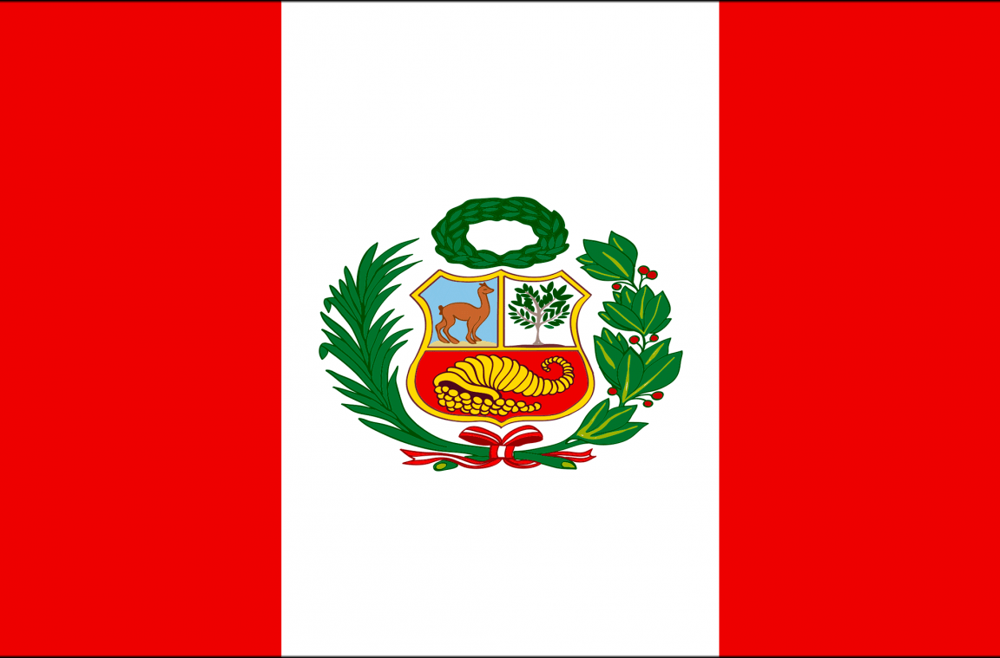
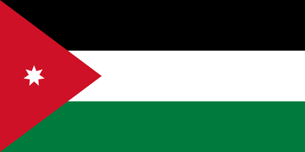

Chichen Itzá
Vestigio importante y renombrado de la civilización maya, las construcciones principales que ahí perduran corresponden al periodo denominado clásico tardío o posclásico temprano (800-1100 d. C.).

Coliseo Romano
El Coliseo o Anfiteatro Flavio es un anfiteatro de la época del Imperio romano, construido en el siglo I. Está ubicado en el este del Foro Romano, y fue el más grande de los que se construyeron en el Imperio romano.

Taj Mahal
El Taj Mahal es un monumento funerario construido entre 1631 y 1654 en la ciudad de Agra, estado de Uttar Pradesh (India), a orillas del río Yamuna, por el emperador musulmán Shah Jahan de la dinastía mogol.

Machu Picchu
Machu Picchu es una ciudadela inca ubicada en las alturas de las montañas de los Andes en Perú, sobre el valle del río Urubamba. Se construyó en el siglo XV y luego fue abandonada, y es famosa por sus sofisticadas paredes de piedra seca.
La gran muralla China
La Gran Muralla China es una antigua fortificación china, construida y reconstruida entre el siglo V a. C. y el siglo XVI para proteger la frontera norte del Imperio chino durante las sucesivas dinastías imperiales de los ataques de los nómadas xiongnu de Mongolia y Manchuria.

Petra
Petra es una ciudad arqueológica famosa en el desierto, al sudoeste de Jordania. Fundada alrededor del 300 a. C., era la capital del Reino Nabateo. Se puede acceder a través de un estrecho cañón llamado Al Siq y contiene tumbas y templos tallados en acantilados de arenisca de color rosa, motivo por el que se la conoce como la "Ciudad Rosa".
Cristo redentor
El Cristo Redentor o Cristo del Corcovado es una estatua art déco de Jesús de Nazaret con los brazos abiertos mostrando a la ciudad de Río de Janeiro, Brasil. La estatua tiene una altura de 38 metros sobre un pedestal de 8 metros.